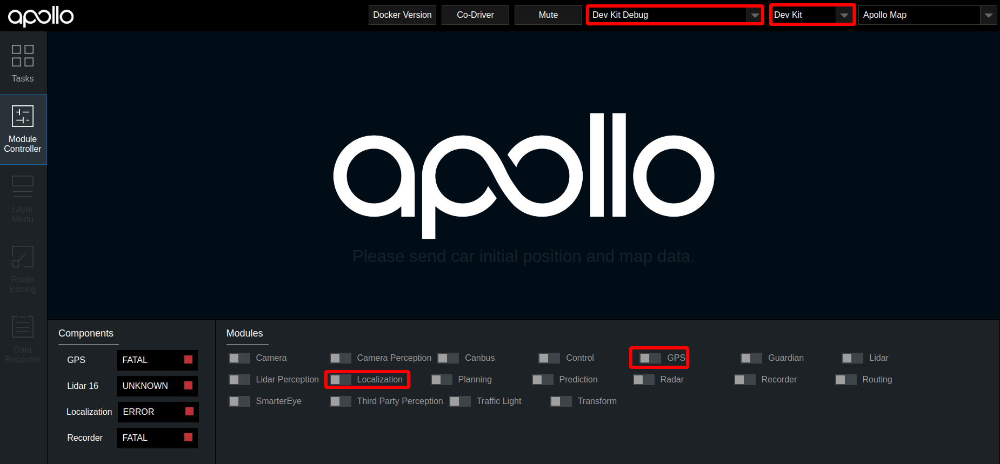
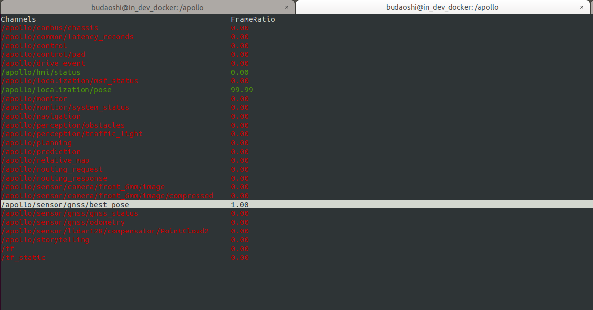
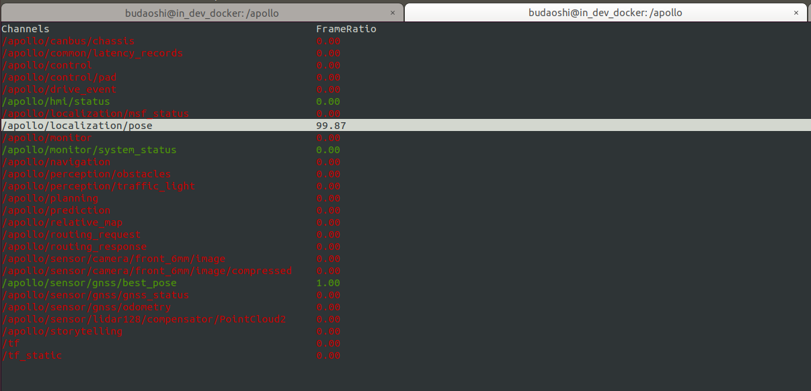

循迹搭建--定位模块配置#
概览#
该手册旨在帮助用户在自动驾驶开发套件上配置定位模块。在定位模块配置环节，将完成导航设备配置。
前提条件#
- 完成了循迹搭建--车辆集成
- 拥有RTK基站账号
导航设备配置#
下面介绍导航配置的方法。当设备正确接入系统后，在/dev/下面有名为ttyACM0的设备，即表示M2已经被正确地加载了。配置设备时，需要将设备的串口线连接上电脑的串口才可以对设备进行配置，也就是说，用来配置设备的电脑主机需要拥有串口。Windows下可以通过串口助手、串口猎人或者COMCenter等工具进行配置，Linux下可以通过Minicom、cutecom等工具进行配置。linux下建议使用cutecom软件，可使用sudo apt install cutecom来安装此软件，在终端中使用sudo cutecom命令打开该软件，在软件中open名为ttyS0的设备。
杆臂配置#
车尾天线（后天线，通常是主天线，也就是Primary）杆臂配置：
$cmd,set,leverarm,gnss,x_offset,y_offset,z_offset*ff
这里的杆臂值x_offset,y_offset,z_offset就是车辆集成环节中测量所得的杆臂值，杆臂值请以自己使用的实际情况为准。
GNSS航向配置#
天线车头车尾前后安装
$cmd,set,headoffset,0*ff
导航模式配置#
$cmd,set,navmode,FineAlign,off*ff
$cmd,set,navmode,coarsealign,off*ff
$cmd,set,navmode,dynamicalign,on*ff
$cmd,set,navmode,gnss,double*ff
$cmd,set,navmode,carmode,on*ff
$cmd,set,navmode,zupt,on*ff
$cmd,set,navmode,firmwareindex,0*ff
USB接口输出设置#
$cmd,output,usb0,rawimub,0.010*ff
$cmd,output,usb0,inspvab,0.010*ff
$cmd,through,usb0,bestposb,1.000*ff
$cmd,through,usb0,rangeb,1.000*ff
$cmd,through,usb0,gpsephemb,1.000*ff
$cmd,through,usb0,gloephemerisb,1.000*ff
$cmd,through,usb0,bdsephemerisb,1.000*ff
$cmd,through,usb0,headingb,1.000*ff
网口配置#
$cmd,set,localip,192,168,0,123*ff
$cmd,set,localmask,255,255,255,0*ff
$cmd,set,localgate,192,168,0,1*ff
$cmd,set,netipport,111,112,113,114,8000*ff
$cmd,set,netuser,username:password*ff
$cmd,set,mountpoint,XMJL*ff
假如您通过自建RTK基站或者购买RTK基站服务的方式拥有了一个RTK基站账号，账号信息如下：
ip:203.107.45.154
port:8002
mount_point:RTCM32_GGB
user:qianxun1234
password:abc123
这里我们假设您所使用的无线路由器的IP地址为192.168.0.1,那么我们将M2主机的IP地址设置为192.168.0.123，子网掩码为255.255.255.0，网关为192.168.0.1。netipport设置的是RTK基站的IP地址和端口号，具体到上面您购买的RTK基站账号中，在此处IP地址为：203.107.45.154，端口号为：8002；netuser设置的是RTK基站的用户名和密码，在此处用户名为：qianxun1234，密码为：abc123；在实际配置中，请以自己实际购买的基站账号的用户名和密码为准。mountpoint是RTK基站的挂载点，在这里我们选用RTCM32_GGB。注意：在M2的网络模块配置完成后，在IPC主机中应该是可以ping通IMU的ip地址的；否则，IMU无法正常联网，在后续的GNSS信号检查中会一直显示SINGLE而不是我们期望的NARROW_INT。
注意：当您升级了IMU的固件版本时，请用以下命令来查看IMU的网络相关的配置：
$cmd,get,netpara*ff
若输出的内容有$cmd,set,ntrip,disable,disable*ff相关的字样，则将以下命令输入IMU：
$cmd,set,ntrip,enable,enable*ff
$cmd,save,config*ff
PPS授时接口输出#
ppscontrol enable positive 1.0 10000
log com3 gprmc ontime 1 0.25
将所有配置逐条发送给设备，得到设备返回$cmd,config,ok*ff字段，说明配置成功，配置成功后要进行配置保存，发送$cmd,save,config*ff指令，然后将该设备断电后重新上电加载后即可使用。注意：PPS授时接口输出的两条配置命令是没有返回$cmd,config,ok*ff字段的，这是正常情况，不用担心。
系统文件配置#
系统文件配置主要包括两部分，GNSS配置、localization.conf文件配置。
GNSS配置#
修改/apollo/modules/calibration/data/dev_kit/gnss_conf文件夹下面的配置文件gnss_conf.pb.txt，修改如下内容配置基站信息：
rtk_from {
format: RTCM_V3
ntrip {
address: "<IP>"
port: <PORT>
mount_point: "<MOUNTPOINT>"
user: "<USER>"
password: "<PASSWORD>"
timeout_s: 5
}
push_location: true
}
这是RTK基站信息相关的配置，请依据自己的实际情况进行配置。假如您购买了一个千寻知寸账号，账号信息如下：
ip:203.107.45.154
port:8002
mount_point:RTCM32_GGB
user:qianxun1234
password:abc123
则修改后的内容如下所示：
rtk_from {
format: RTCM_V3
ntrip {
address: "203.107.45.154"
port: 8002
mount_point: "RTCM32_GGB"
user: "qianxun1234"
password: "abc123"
timeout_s: 5
}
push_location: true
}
注意：RTK基站信息需要同时配置在M2的IMU主机中和apollo的开发套件的gnss_conf.pb.txt配置文件中。
同时将文档中的proj4_text: "+proj=utm +zone=50 +ellps=WGS84 +towgs84=0,0,0,0,0,0,0 +units=m +no_defs"这一行中的zone=50中的50换成自己的城市所在的utmzone数值；比如这里的数值50代表的是北京，若您在纽约，则用纽约的utmzone数值10替换掉这里的数值50，以此类推。
Localization.conf文件的配置#
对modules/calibration/data/dev_kit/localization_conf/localization.conf文件进行配置。如果该配置文件没有进行正确配置，可能会对之后的传感器标定、虚拟车道线制作等功能产生影响
| 参数 | 说明 |
|---|---|
| lidar_height_default | 参数值修改为lidar中心到地面的距离 单位m |
| local_utm_zone_id | 需要用户查询所在地区的utm_zone，并进行修改。例如，北京地区utm_zone为50。utm_zone的查询可参考该网页 |
| imu_to_ant_offset_x | x轴方向杆臂值，单位m，杆臂值测量方法参看循迹搭建--车辆集成文档 |
| imu_to_ant_offset_y | y轴方向杆臂值，单位m，杆臂值测量方法参看循迹搭建--车辆集成文档 |
| imu_to_ant_offset_z | z轴方向杆臂值，单位m，杆臂值测量方法参看循迹搭建--车辆集成文档 |
| --enable_lidar_localization=true | 修改为--enable_lidar_localization=false |
检查定位模块能否正常启动#
将车辆移至室外平坦开阔处，按顺序执行如下操作
1. 编译项目，启动Dreamview
进入docker环境，用gpu编译项目，启动DreamView
cd /apollo
bash docker/scripts/dev_start.sh
bash docker/scripts/dev_into.sh
bash apollo.sh build_opt
bash scripts/bootstrap.sh
2. 启动定位模块
- 在浏览器中打开
(http://localhost:8888)，选择模式为Dev Kit Debug， 选择车型为Dev Kit，在Module Controller标签页启动GPS、Localization模块。

3. 检查GPS信号
打开新的终端，并使用bash docker/scripts/dev_into.sh命令进入docker环境，在新终端中输入cyber_monitor命令，进入 /apollo/sensor/gnss/best_pose条目下，查看sol_type字段是否为NARROW_INT。若为NARROW_INT，则表示GPS信号良好；若不为NARROW_INT，则将车辆移动一下，直到出现NARROW_INT为止。进入/apollo/sensor/gnss/imu条目下，确认IMU有数据刷新即表明GPS模块配置成功。


4. 检查定位信号
使用cyber_monotor查看，进入/apollo/localization/pose条目下，等待两分钟，直到有数据刷新即表明定位模块配置成功。


NEXT#
现在，您已经完成定位模块配置，接下来可以开始循迹搭建--车辆动力学云标定
常见问题#
a.系统无法生成驱动设备ttyACM0，在/apollo/data/log/gnss.INFO里面会有类似报错提示：
open device /dev/ttyACM0 failed， error: no such file or directory
gnss driver connect failed, stream init failed
docker内和docker外的/dev/下都没有ttyACM0设备，先退出docker，然后关闭docker，再执行如下命令：
cd /apollo/docker/setup_host
bash setup_host.sh
重启工控机，然后在/docker/外，/dev/下，就有ttyACM0，再进docker，再试gps，可以了。
b.gps.sh打开后不正常，log提示Unable to load gnss conf file
原因是gps配置文档不正确，检查每一行，是否有错误，尤其如下几行的#要去掉：
#address: "111.111.111.111"
#port: 0000
#mount_point: "yourport"
#user: "username"
#password: "password"
另外，在程序运行的过程中，有可能会把modules/calibration/data/vehicle_name/gnss_params/gnss_conf.pb.txt拷贝到modules/drivers/gnss/conf/gnss_conf.pb.txt，那么我们也需要修改modules/calibration/data/vehicle_name/gnss_params/gnss_conf.pb.txt里面的基站配置信息和+zone=50才能保证gnss配置正确。
c.GPS打开后，发现best_pose, imu, localization/pose 信号没有收到
运行bash gps.sh后，可以cyber_monitor中观察以下几个信号
/apollo/sensor/gnss/best_pose
/apollo/sensor/gnss/imu
/apollo/localization/pose
如果best_pose和imu没有，请检查gps和imu的配置。 如果best_pose和imu有了，但是localization/pose没有信号，请等待2分钟，如果还是没有，请让车开动几分钟。
d.GPS打开后，发现best_posed的sol_type为single，不是我们需要的NARROW_INT。
首先，确认IMU设备里面和modules/calibration/data/dev_kit/gnss_conf/gnss_conf.pb.txt文件中已经配置好了基站信息。
其次，检查IMU的网络接口是否插好了网线连接上了路由器，并且可以在工控机的终端里ping通IMU，同时保证路由器里面插上了手机的sim卡并且工控机能通过路由器正常地访问互联网。
再次，联系商务的同事请他们提供刷新IMU的固件版本的教程和工具，刷新完IMU后请按照文档重新配置一遍IMU。
最后，联系商务的同事商讨将IMU返厂维修的事宜。